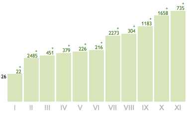

Как раскрутиться с помощью Subscribe.ru?
Как раскрутиться с помощью Subscribe.ru?
Обычно начинают с создания своего сайта или блога. Иногда блога в ЖЖ. Это, безусловно, имеет смысл, но сколько читателей он принесет Вам сам по себе? И как скоро? Но все можно сделать быстрее и эффективнее. И что немаловажно - технически проще.
В чем суть сервиса для авторов?
Сервис Subscribe.ru предлагает очень хорошее решение. Вы открываете на нем свою рассылку и пишете в нее интересные статьи, а Subsribe.ru продвигает их и дает Вам читателей. За это он размещает в Ваших выпусках рекламу, на которой зарабатывает. А вы получаете целевую аудиторию как раз по Вашей теме. Позже, если захотите, Вы можете перейти на платный аккаунт и убрать чужую рекламу, но ничто не мешает Вам начать анонсировать свои услуги/проекты сразу, как Вы открыли рассылку. (Правда, совсем сразу это делать, разумеется, не стоит ;))
Кстати говоря, Subscribe.ru не является спонсором этой статьи (хотя я бы не отказался ;)). Я просто решил поделиться с Вами своим опытом, в обмен на Ваш интерес к моей теме ;) И заодно показать, что можно вообще без каких-либо технических знаний и помощи программистов стать популярным автором.
Статистика и возможности
Сейчас у меня более 23.000 подписчиков в рассылке на сервисах Subscribe.ru и Content.mail.ru. Плюс 5.000 в собственном подписном листе. Но первые 10.000 подписчиков на Subscribe.ru появились у меня за первые 10 месяцев. Когда я активно использовал ту стратегию, о которой и собираюсь Вам сегодня рассказать.
Моя статистика на Subscribe.ru

Как видно на графике, подписчики появляются волнами. Каждая волна - это сочетание анонса рассылки в новостях Subscribe.ru и хорошей статьи в самой рассылке.
Интересный факт!
Влияние каждого анонса на привлечение подписчиков в среднем одинаковое (летом, разумеется, ниже). Но тем не менее, мы видим на графике разные волны - от +22 человек до +2485 человек. Такую разницу (в 100 раз!) делают статьи. Потому что прежде чем подписаться на рассылку, люди обычно читают несколько статей из нее (что логично ;))
Плохая и хорошая новости
Плохая новость заключается в том, что сейчас бесплатные анонсы рассылки в новостях Subscribe.ru (которые дают новую волну подписчиков) уже не предоставляются так часто. А платные анонсы стоят по $100 за штуку. Скорее всего, эти изменения были сделаны специально, в связи с появлением хорошей новости. И я прекрасно понимаю, почему они так сделали... ;)
Получение подписчиков с помощью дайджеста рассылок
Хорошая новость заключается в том, что Subscribe.ru сделал дополнительный сервис для своих читателей - дайджест рассылок. Каждая публикация статьи в нем работает так же, как анонс в новостях, а стоит это - 0 рублей.
Эффект от публикации в дайджесте, конечно, не такой большой, как от анонса - раза в 2-3 слабее. Но зато Вам не нужно ждать, когда Вам дадут очередной анонс за «высокую читательскую активность» - Вы можете отправлять на публикацию в дайджест каждую свою статью. То есть, каждая Ваша статья будет приносить Вам волну новых подписчиков! Так что теперь мы имеем намного больше возможностей привлечь читателей.
Безусловно, для публикации в дайджесте, статья должна быть хорошей (об этом мы обязательно поговорим еще). Она должна понравиться редакторам дайджеста (если статья хорошая, это не проблема). И время публикации статьи в дайджесте редакторы тоже выбирают сами - может пройти от 1 дня до 1 месяца. Что, впрочем, тоже зависит от того, насколько им понравилась статья.
Секрет успеха
Очевидный вывод, к которому мы приходим - для быстрого набора большого количества подписчиков нам нужны хорошие статьи. К этому вопросу мы еще вернемся, но есть еще кое-что, увеличивающее эффект на порядок. Без этой стратегии даже куча шедевральных статей сработают средненько... (тоже проверено).
Стратегия привлечения читателей
1. «Визитная карточка» рассылки
Вы можете разместить рассылку в 4-х рубриках каталога. Однако основной поток подписчиков Вы будете получать не через каталог, а через дайджесты Ваших статей. И «визитной карточкой» Вашей рассылки в дайджесте будет название и короткое (до 250 символов) описание. Поэтому они должны идеально точно описывать про что Ваша рассылка и почему с ней стоит познакомиться.
2. Как создать эффект сериала?
Прежде чем подписаться, многие читатели пробегают по архиву предыдущих выпусков. Поэтому когда серия статей последовательно раскрывают одну тему (как главы книги), это в разы лучше вовлекает читателей. Ведь, всегда удобнее получить всю информацию в одном месте. Но не большой электронной книгой, на которую ни у кого не найдется времени, а удобными для восприятия «порциями».
Но самое важное в этом то, что Ваша рассылка приобретает «эффект сериала». То есть, люди на нее подсаживаются начинают любить ее как что-то родное и постоянное ;)
А после 21-го выпуска* Вы станете такой же неотъемлемой частью их жизни, как утреннее кофе или любимая радиостанция. При условии, конечно, что Ваши выпуски выходят регулярно.
(* 21 - необходимое количество раз для полного формирования привычки в нейронных сетях нашего разума. Все, с чем мы совершаем 21 касание, становится частью нашей жизни.)
И еще один прием, который очень сильно вовлекает читателей.
Когда логика Ваших выпусков последовательна, и в конце каждого выпуска Вы знаете, о чем напишите в следующий раз - используйте это. Просто сообщите Вашим читателям о том, что их ждет, и Вы создадите ожидание следующего выпуска и желание подписаться. К тому же, когда у Вас наберется статей на книгу, и Вы решите ее издать, Вам не придется ломать голову, как сделать этот материал целостным - он уже будет таким. Именно так я написал эту книгу за один вечер ;) Кстати, очень здорово получилось, потому что в ее главы вошло все самое лучшее за 5 лет. ...Тут же, наверно, стоит отметить, что и издательства меня находили тоже через рассылку.
3. Четкая регулярность выпусков
Минимум - один раз в 2 недели, максимум - 2 раза в неделю. Сервисы, конечно, не делают таких жестких границ, но по опыту за эти границы лучше не выходить.
Если выпуск Вашей рассылки не укладывается в два абзаца, то выход его чаще двух раз в неделю будет только все портить. У читателя не успеет возникнуть «голод» по Вам, и следующий выпуск уже не будет столь ожидаемым и желанным.
Если же Вы будете писать реже, чем раз в 2 недели, то про Вас просто будут забывать. То есть, Вас лично, конечно же вспомнят ;) но про что Вы писали в прошлом выпуске не вспомнит никто. К тому же, эмоциональная «атмосфера» статьи просто не может сохраняться в сознании человека так долго и эффект сериала будет работать вслабо.
4. Дополнительные 25% + 25% читателей.
Ничто не мешает Вам вести одну рассылку на нескольких сервисах сразу. Например, вместе с Subscribe.ru я использую еще и Content.mail.ru. На другом сервисе выпуски той же рассылки просто дублируются. Причем Subscribe.ru предлагает инструменты для полной автоматизации этого процесса. Вам нужно будет только один раз все настроить, и Ваша рассылка будет сразу выходить в нескольких местах. В результате Вы получаете дополнительных читателей при том же количестве усилиий (у меня сейчас 17.000 подписчиков на Subscribe.ru и 6.000 на Content.mail.ru).
Если у Вас нет своего сайта или блога, где Ваши читатели могли бы оставлять комментарии (зачем это нужно - я расскажу ниже), то Вы можете использовать блог на Subscribe.ru. Его Вы получаете автоматически при открытии рассылки. Но если Вы используете несколько сервисов рассылок, то лучше все-таки, сделать отдельный блог или сайт, чтобы не дразнить сервисы ссылками на конкурентов.
Если сделать сайт - задача невыполнимая для Вас, откройте аккаунт в ЖЖ (livejournal.ru) или на Liveinternet.ru. Дублируйте туда статьи, приглашайте туда читателей рассылки для обсуждения выпуска, и Вы получите еще +15-25% читателей уже из самого ЖЖ. При выборе блога проверьте, в какой сети больше Вашей читательской аудитории. Для этого можно воспользоваться каталогом или поиском по сообществам.
5. Каждая статья - это событие! Как это сделать?
Общайтесь с Вашими читателями, и Вы поразитесь, какое количество новых тем для статей они дадут Вам своими вопросами и комментариями.
Как общаться? Очень просто. Приглашайте их в каждом выпуске обсудить этот материал в Вашем блоге, задать по нему вопросы или поделиться своим опытом. Иногда это будет создавать живые дискуссии между читателями, которые бывают не менее интересны, чем сама статья. Но самое главное - это фидбэк, который Вы получаете (понимание, как была воспринята Ваша статья и что еще интересно Вашим читателям).
Если же у Вас нет на сайте возможности оставлять комментарии, предложите читателям написать Вам лично на е-мейл. В самом начале я делал именно так, и некоторые мои статьи рождались прямо в почтовой переписке. Чем лучше Вы узнаете своих читателей, тем более нужным для них становится Ваш материал. К тому же, именно Ваши читатели - Ваши лучшие учителя: они всегда расскажут Вам, от чего они прыгали до потолка, и что оказалось полным отстоем нужно улучшить в Ваших статьях.
6. Создание известности через статьи
Очень хорошо, если в тематике рассылки Вы экспертны, талантливы или уникальны. Потому что со временем Ваши читатели начнут интересоваться кто Вы и чем занимаетесь. И это как раз тот самый момент, когда Ваша популярность начнет расти, а услуги - продаваться. И если все Ваши статьи раскрывали именно эту тему, эффект будет просто потрясающим!
Если Вы пока не являетесь великим гуру, экспертность можно создать за счет сужения сферы Вашей специализации до той ее области, в которой Вы разбираетесь лучше всего (например, не просто коуч, а коуч по ресторанному бизнесу в мегаполисах). А уникальность можно сделать за счет синтеза Вашей ниши с какой-то другой (например, женский психолог, занимающийся даосскими практиками). Каждый человек уникален - просто обнаружьте свою уникальность в своих увлечениях и расскажите о ней читателям.
Написать о себе Вы можете на странице рассылки в каталоге, а также продублировать на блоге. Тогда в каждом выпуске рассылки Вы можете делать свою подпись гиперссылкой. Кликая по ней, читатели будут попадать на Ваше резюме, а там уже фото, видео, список побед и медалей... и предложение Ваших услуг ;)
Ключевой момент
Описанные выше шесть правил (все 6, а не 2-3 ;)) гарантированно принесут Вам большую читательскую аудиторию. Причем, быстро. Но ключевое условие для этого - Ваши статьи должны быть интересными. А в идеале - настолько увлекательными, чтобы их читали на одном дыхании. И хорошая новость в том, что Вы можете сделать их таковыми. Причем, легко и не напрягаясь. Если, конечно, у Вас хоть немного есть склонность писать.
О том, как научиться этому быстро, я расскажу в следующем выпуске.
P.S. Если у Вас есть вопросы, желание прокомментировать или поделиться опытом, напишите, пожалуйста, в комментариях ниже.
 Егор Булыгин
Егор Булыгин
21 октября 2010
"Как писать увлекательные статьи?" - тренинг в коробке.